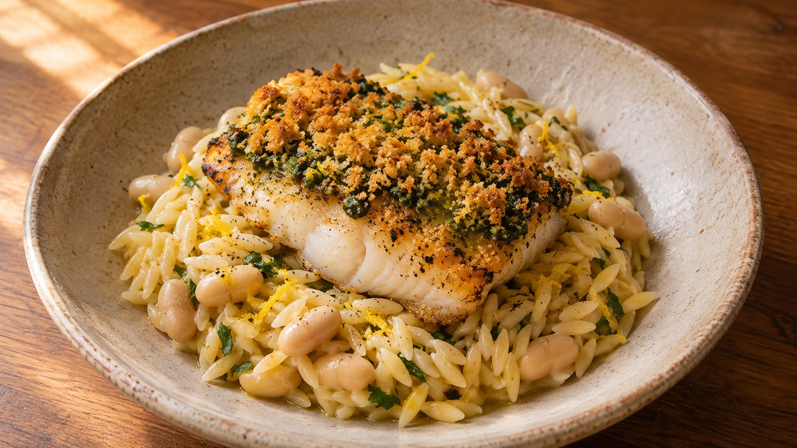

Mediterranean-inspired · Dinner · Serves 3 · About 30 minutes
Pesto-Crusted Sablefish with Lemon and White Bean Orzo

Ingredient amounts are estimates when scaled. AnyList imports the original quantities.
Ingredients
- 3 sablefish fillets (5–6 oz each), thawed
- 3 Tbsp Genovese basil pesto, thawed if frozen
- 1/3 cup panko breadcrumbs
- 1 cup dry orzo
- 1 can (15 oz) cannellini beans, drained and rinsed
- 2 Tbsp olive oil, divided
- 1 Tbsp bottled lemon juice, plus more to taste
- Kosher salt and black pepper, to taste
- 12 oz broccoli florets
- 1 Tbsp olive oil for the broccoli
- 1/4 tsp kosher salt for the broccoli
- 1/8 tsp black pepper for the broccoli
Instructions
- Heat the oven to 425°F and lightly oil a baking dish. Pat the fish dry, season lightly with salt and pepper, and place it skin-side down.
- For the roasted broccoli, toss the florets with olive oil, salt, and pepper. Spread on a sheet pan and roast at 425°F for 18–22 minutes, until browned and tender. Start the broccoli before preparing the fish so both can roast in the same oven.
- Mix the pesto with the panko. Press the mixture evenly onto the top of the fish. Roast until the center reaches 145°F and the topping is golden, checking at 10 minutes. Thicker fillets can take longer.
- Cook the orzo according to its package directions. Add the cannellini beans during the last minute to warm them, then drain. Toss with the remaining olive oil, lemon juice, salt, and pepper. Spoon the fish over the orzo to serve.